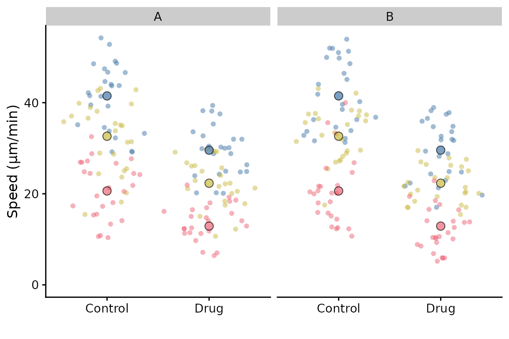

Current limitations
There are some limitations to SuperPlotR. This vignette covers them and offers solutions where possible.
Facetting
Facetting is partially supported. In the simple scenario of facetting by replicate, you can do this:
library(SuperPlotR)
#> Error in get(paste0(generic, ".", class), envir = get_method_env()) :
#> object 'type_sum.accel' not found
library(ggplot2)
p <- superplot(lord_jcb, "Speed", "Treatment", "Replicate",
ylab = "Speed (µm/min)")
p + facet_wrap(~Replicate)
If we had another variable that we wished to facet by, then facetting by a this variable is possible, but with a limitation: The summary points will remain as the replicate summary and therefore will be the same for each facet. This may not be what you want.
df <- cbind(lord_jcb, other = rep(c("A", "B"), 150))
p <- superplot(df, "Speed", "Treatment", "Replicate", ylab = "Speed (µm/min)")
p + facet_wrap(~other)
Solution: The best way to do achieve “facetting” currently (and have the correct summary points) is to make a SuperPlot for each variable, i.e. after filtering the data frame for A and B, and then combine them using patchwork or similar package.
Conditions and Replicates are categories
If you have a dataset where the conditions and replicates are numeric, SuperPlotR converts them to character for plotting. This is the intended behaviour for a SuperPlot.
Currently, if your data has Conditions that are numeric, for example time points, and these are unevenly spaced, e.g. 0, 1, 3, 9 hours; then these will appear evenly spaced on the x-axis. This is a limitation of the current implementation. Raise an issue if you would like this to be changed.
Adding statistics
This is currently not supported due to the number of different ways that users may wish to add p-values or stars and the different tests that would need to be accommodated. However, it is possible to add them manually to the SuperPlot object. Again, raise an issue if you would like this to be changed.